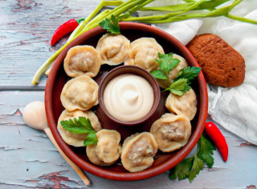

Назад
Пельмени домашние классические

1 час

4 порции

1 час
4 порции
Ингридиенты:
Для теста:
Мука - 300 г
Кипяток - 1 стакан (250 г)
Соль - 1 ч. ложка
Для начинки:
Свинина - 200 г
Говядина - 200 г
Лук репчатый - 1 шт.
Черный перец - 1 щепотка
Соль - 1-2 ч. ложки
Молоко - 0,5 стакана
или вода - 0,5 стакана
Пошаговый рецепт
- Подготовьте продукты по списку.
- Сделать тесто для пельменей. Для этого сперва просеять муку. Вскипятить чайник. В миску насыпать соль. Добавить 1 стакан кипятка. Подсыпая просеянную муку, быстро замесить мягкое тесто. Переложить тесто для пельменей на посыпанную мукой доску, хорошо обмять так, чтобы тесто не приставало к рукам. Тесто накрыть полотенцем. Дать постоять 20 минут.
- Тем временем сделать начинку для пельменей. Лук репчатый очистить, помыть и мелко нарезать.
- Мясо помыть, разрезать на кусочки. Пропустить через мясорубку. Посолить и поперчить. Добавить репчатый лук.
- Добавить столько воды или молока, чтобы фарш был не густым, но и не слишком жидким. Хорошенько перемешать. Фарш готов.
- Тесто для пельменей разделить на 4 части. Скатать каждый кусочек в колбаску.
- Каждую колбаску разрезать на 15-16 кусочков. Каждый кусочек раскатать скалкой в кружок.
- На каждый кружочек теста положить неполную чайную ложку фарша. Сложить заготовку вдвое и тщательно защипнуть края, ушки соединить.
- Так сделать все пельмени. Накрыть полотенцем, чтобы не подсохли. Или заморозьте впрок.
- Вскипятить 2,5 л воды. Посолить. Выложить одну порцию пельменей. Помешать, чтобы не слиплись. Дать вскипеть до всплытия пельменей и убавить огонь до среднего.